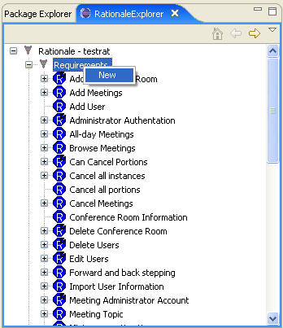
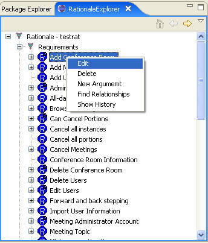
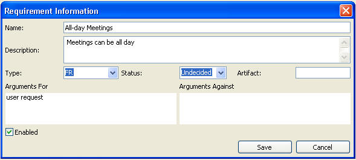

In
order to create a new requirement, right-click the "Requirements" in the
RationaleExplorer and choose new, which will bring up the requirement editor. Or
we could edit an existing requirement by right-click the name of an existing
requirement and choose edit or by double-clicking the name of the requirement.
See the following figures:


The following figure shows the requirement editor. The Name is mandatory and must be filled in. Other fields will have default values. The “Arguments For” and “Arguments Against”fields are for display only and will have values if this is an existing requirement and has arguments associated with it (as is shown here). Note the box at the lower left marked“Enabled” this is used to disable a requirement to determine the impact on the rationale. Requirements that are not yet implemented in the current release of the software but are planned for the future can be disabled to avoid errors being displayed in the Rationale. A disabled requirement will have a “D” superimposed on its icon.
